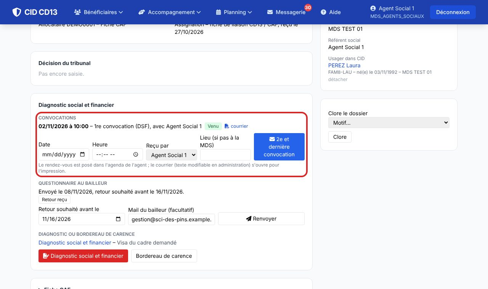
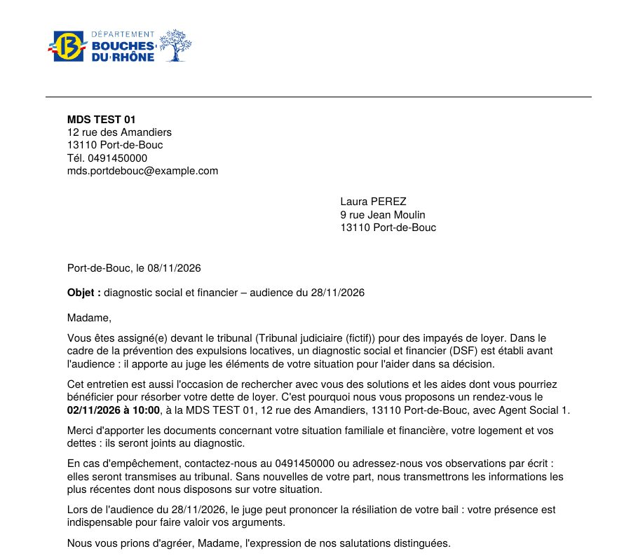
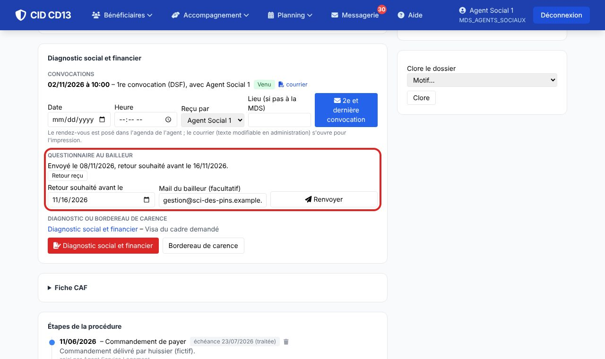
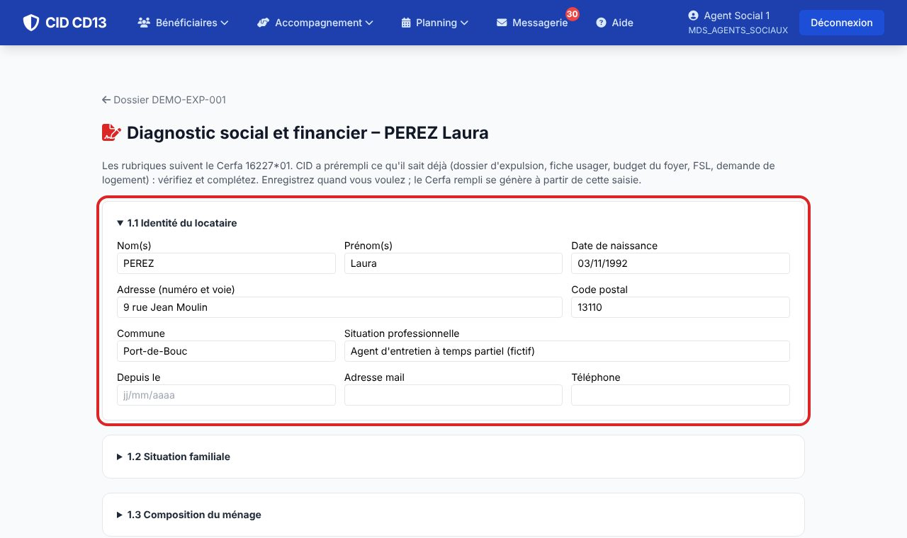
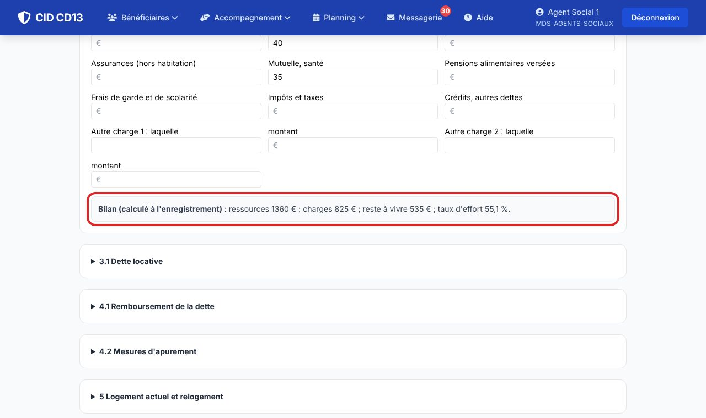
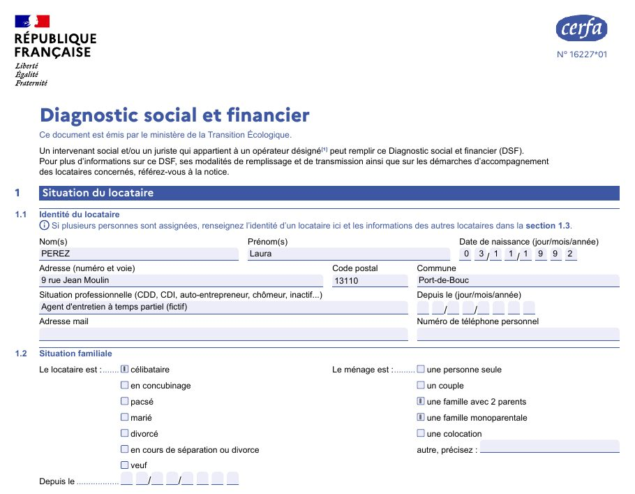
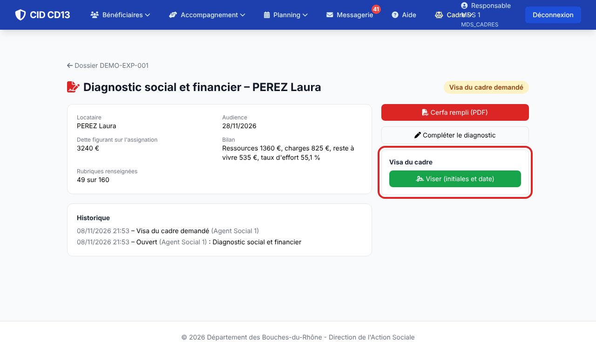
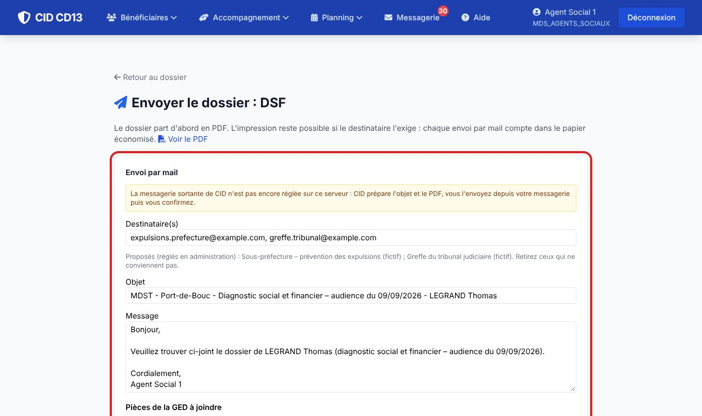
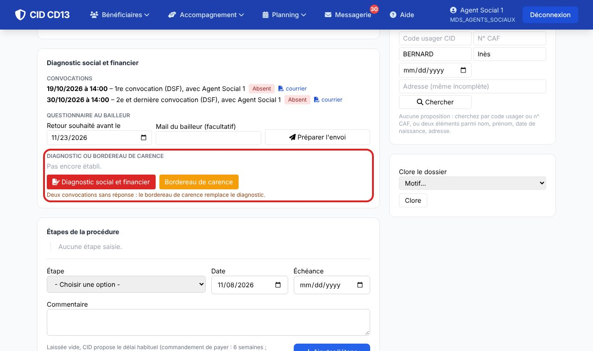

1Convoquer le ménage


- Bloc Convocations : date, heure, agent qui reçoit (et lieu si ce n'est pas la MDS), puis Convoquer. Le rendez-vous est posé dans l'agenda de l'agent et le courrier s'ouvre pour l'impression.
- Après le rendez-vous, cliquez sur Venu, Absent ou Annulée : l'agenda suit.
- Sans réponse, la 2e et dernière convocation rappelle la première date et prévient que l'absence sera signalée au juge.
Le texte des courriers se modifie en administration : Modèles de courriers → Logement – prévention des expulsions.
2Interroger le bailleur

- Bloc Questionnaire au bailleur : choisissez la date de retour (CID propose 15 jours, au plus tard une semaine avant l'audience) et, si vous l'avez, le mail du bailleur, puis Préparer l'envoi.
- Le courrier et le questionnaire partent par mail ou s'impriment pour un envoi postal. À réception, cliquez sur Retour reçu et rangez la réponse dans la GED.
3Établir le diagnostic


- Diagnostic social et financier : les rubriques suivent le Cerfa 16227*01. CID a déjà repris l'identité, l'adresse, la composition du ménage, les ressources et charges du budget du foyer, la dette et le loyer du dossier, le FSL et la demande de logement social, l'audience et vos coordonnées (le mail de la MDS, jamais le vôtre).
- Complétez les causes de l'impayé, la reprise du loyer, la capacité de remboursement, le logement, l'aide juridictionnelle et l'évaluation sociale. Le bilan (reste à vivre, taux d'effort) se recalcule à chaque enregistrement.
Modifier un diagnostic déjà visé annule le visa : il faut le redemander.
4Le Cerfa rempli

- Cerfa rempli (PDF) : les cinq pages du formulaire, sans la notice ; les totaux sont calculés par CID. Le PDF reste modifiable par le greffe s'il le faut.
5Le visa du cadre

- Le travailleur social clique sur Demander le visa du cadre : le responsable de la MDS est prévenu dans CID.
- Le cadre ouvre le document et clique sur Viser : ses initiales et la date s'inscrivent en bas du Cerfa (et sa signature numérisée, si elle a été validée en administration).
6Transmettre

- Envoi par mail : le greffe du tribunal et la préfecture réglés en administration sont proposés ; l'objet est prérempli ; les pièces de la GED se cochent. Le Service Logement est prévenu et l'étape s'ajoute à la procédure.
- Imprimer pour envoi seulement si le destinataire l'exige. Chaque envoi par mail compte dans le papier économisé.
7Le bordereau de carence

- Si le ménage n'est venu à aucune des deux convocations, le bouton Bordereau de carence passe en orange. CID reprend les dates des convocations non honorées, le n° EXPLOC et le n° allocataire du dossier.
- Même circuit que le DSF : visa du cadre, puis envoi par mail ou impression.
Bon à savoir
- Le Cerfa 16227*01 est livré avec CID ; une version plus récente se dépose en administration (Formulaires officiels, code EXP_DSF). Le questionnaire bailleur et le bordereau de carence de votre département se déposent de la même façon ; sinon CID imprime une trame aux mêmes rubriques.
- Les adresses du greffe et de la préfecture se règlent en administration : Logement → Destinataires des diagnostics.
- Le ménage n'est pas encore connu de CID ? Le diagnostic et le bordereau se font quand même, à partir de la fiche du Service Logement.
Et ensuite ?
Cliquez sur une image pour l'agrandir. Le cadre rouge montre où cliquer ou quoi remplir. Toutes les données affichées sont fictives.